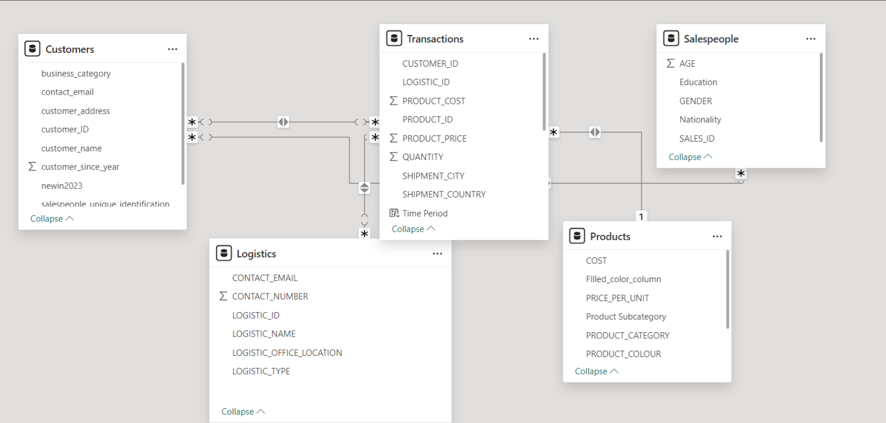

Annual Shareholder Report - Universal Export (2023)
This analysis comprises two reports for Universal Export, a Southampton-based manufacturer of unbranded apparel (t-shirts, hoodies, and jackets) for retailers and wholesalers who customize them with their own designs. The first report serves as an annual shareholder update, while the second evaluates sales team performance for internal promotion considerations.
Purpose: To provide shareholders with a comprehensive view of the UK-based unbranded garment manufacturer's performance, focusing on:
- Sales and profit trends (weekly/monthly analysis)
- Product portfolio performance
- International sales comparison
- Progress on reducing air shipments (July-December 2023)
Sales Team Performance Review 2023 - Universal Export
This review evaluates top-performing salespeople for promotion to Head and Deputy Head of Sales. Assessment criteria include sales and profit generation, new customer acquisition in 2023, and demonstrated understanding of profit margins. The selected candidates will be recognized for their exceptional contribution to Universal Export's success.
Purpose: To evaluate and recognize top salespeople for departmental leadership positions based on:
- Revenue and profit generation
- New customer acquisition
- Understanding and contribution to profit margins
project brief
Role - Business Analyst
Skills - Data Analytics, PowerBI
Timeline - 1 month
Data Extraction and Handling
The ‘GarmentFactoryDataset.zip’ file from Universal Export included five data files in various formats, covering details on the company’s transactions, customers, products, logistics, and salespeople. While the ‘xlsx’ and ‘csv’ files were readily accessible in Power BI, careful extraction was required for other formats. For example, handling files like ‘Salespeople.json’ and ‘Logistics.txt’ required using specific delimiters to accurately extract the data.
Establishing Relationships
Following consistent nomenclature across all tables, relationships were established to enable cross-referenced analysis across datasets.
Standardized Edits Across All Datasets
- Column Formatting: Column names were standardized to uppercase with underscores for uniformity, aiding in automatic table relationships in Power BI.
- Data types: Amount columns were set to Decimal in GBP (£) to reflect the UK-based operations. ID columns were set to Text format to facilitate table linking.
Table Specific Customizations
Customers Table
- Additional data type allocations were applied to all columns.
- The ‘address’ column was split into CITY and COUNTRY for granular location analysis.
- The ‘new_customer’ column was converted to a boolean format, while redundant information was managed without deletion.
Logistics Table
- This table was parsed with a semicolon delimiter.
- The OFFICE_LOCATION column was separated into CITY and COUNTRY.
- Missing contact details in a few records were deemed non-impactful for analysis and retained.
Products Table
- Adjusted PRICE and COST columns for standardization and identified outliers (e.g., extreme prices) for recalibration. Missing values in PRODUCT_COLOUR were filled by extracting color information from product names.
Transactions Table
- Updated ID columns and amount fields. DATE was set to DD/MM/YYYY format for consistency. A WEEK_NUMBER column was generated from the transaction date to analyze weekly trends.
Salespeople Table
- Minor adjustments were made, including setting SALES_ID to Text format.
Calculated Measures, Columns, and Data Groups
Custom calculations were developed using DAX to enhance analysis across tables.
- Products Table: New columns such as TOTAL_PROFIT, TOTAL_QUANTITY, and MARGIN_PERCENTAGE were added to monitor product performance.
- Transactions Table: TRANSACTION_PROFIT and WEEK_NUMBER columns helped in detailed analysis by transaction period.
- Logistics Table: A data grouping was created to differentiate exclusive air shipments, supporting a sustainability impact analysis.
- Customers Table: A measure to track customer acquisition in 2023 was added to evaluate growth.
Accessibility Considerations
Accessible color schemes were applied to ensure that reports are visually clear and suitable for black-and-white printing for easier sharing across teams.
Universal Export's Annual Investor Review,2023
Dear esteemed investors,
We are pleased to present the annual report for the fiscal year 2023 on behalf of Universal Export. It provides a comprehensive overview of the company’s operational status, financial achievements, and major accomplishments during the last year.
The report will throw light on the insights into the company’s sales and profit, diverse products analysis and the share contributed by each. We have provided both a high-level summary and a detailed examination of the trends and patterns identified over weeks and months. This comprehensive approach will allow to grasp our company's financial progress over the course of the year more comprehensively. Additionally, the report will highlight the outcomes of our sustainable initiatives implemented during the reporting period.
Universal Export’s sales and profit trend in 2023

Throughout the fiscal year 2023, sales and profit exhibited fluctuations, showcasing notable highs and lows. August recorded the highest sales at 9711 units, while February marked the lowest at 8251 units exported. Surprisingly, profit trends did not mirror sales trends.
February, the lowest-performing month, saw profits at GBP 271M, contrasting with August's peak sales. The correlation between higher sales and increased profitability underscores the significance of sales performance in driving overall profitability. This highlights the importance of associated products contributing to sales and profit figures, emphasizing the dynamic relationship between sales volume and financial outcomes.
Bifurcation of product categories and analysis
Universal Export's diverse product range includes t-shirts, hoodies, and fake knitted cardigans, among others. The sales and profit figures mentioned earlier stem from the sale of these varied products. T-shirts and hoodies emerge as the top-selling categories, with a slight difference of 100 units between them, selling 28.4k and 28.3k units, respectively. These product categories exhibit significant demand among customers. In contrast, sales of cardigans stand at 9.1k units, while polo shirts, sweatshirts, and jackets occupy the middle ground with a combined total of 44.4k units sold in 2023. This analysis highlights the varying levels of demand for different product categories within Universal Export's portfolio.

It's notable that the sales figures for T-Shirts and Hoodies are remarkably close, indicating strong demand for these products across Universal Export's customer base. Conversely, the significant gap between the top-selling and lower-performing categories suggests potential opportunities for product development, marketing strategies, or pricing adjustments to boost sales of the weaker product lines.
The primary product categories are ranked by sales quantity, with T-Shirts and Hoodies emerging as the top performers. Within these categories, the Unisex T-Shirt and Standard Hoodie subcategories generate the highest revenues, with £120M and £79M respectively.
The analysis of profitability indicates that Hoodies and T-Shirts are the most lucrative categories, boasting margins of 33.6% and 33.3%, respectively. Conversely, cardigans exhibit the lowest profitability, with a margin of 15.32% and total profit of £329.93M. On further breakdown of profit margin reveals sweatshirts as the top contributor, with a profit margin of 18.21%.
In terms of total sales, product subcategories collectively generated £56M in revenue, with Military Jackets yielding the lowest revenue at £26M, indicating weaker performance. This profitability analysis offers valuable insights into each product line's financial performance, with Hoodies (£884.27M) and T-Shirts (£885.52M) emerging as the most profitable categories. Unisex T-Shirts notably stand out as customer favourites, contributing significantly to Universal Export's global success with sales totalling £961M.
Our robust sales and profit figures, particularly in the T-shirt and Hoodie categories, underscore our market dominance and customer appeal. However, challenges remain, such as the need to revitalize underperforming product lines like cardigans and military jackets.
Geographic sales performance comparison
Universal Export's global success can be attributed to its extensive export operations, reaching various countries worldwide. The sales insights across different countries reveal interesting trends. The United Kingdom and Ireland emerge as the largest contributors, with the UK alone generating £1026M in sales and £889M in profit, surpassing other European nations significantly. Several Western and Central European countries record sales ranging from £200M to £250M, while countries like Austria and Portugal exhibit lower sales below £100M. Similar profit patterns are observed. However, it's important to acknowledge the environmental impact associated with global exports, considering transportation modes such as air, sea, and land routes utilized for delivering packages to destination countries.

Small steps towards sustainable environment
In total, 40.33M quantities of products have been exported worldwide. It is analysed that the most preferred mode of shipment is air. Analysis reveals that the preferred mode of shipment is air, despite its rapid delivery but concerning environmental implications. In order to tackle the environmental impact and take small steps towards a sustainable future, the management took decision to commit to minimizing the utilization of air transportation services in particular after 1st July 2023.

In the previous year, a total of 18.87 million packages were shipped via air, the most favoured mode among air, land, and sea. Following the decision, a notable impact has been observed from this initiative. There has been a 24% reduction in the total products sent via air in the second half of 2023 compared to the first half of the year, aligning with our future objectives. This illustrates our commitment to responsible business practices and environmental stewardship.
Conclusion
In conclusion, Universal Export's performance in 2023 reflects both strengths and areas for improvement. Additionally, while our global exports have propelled us to success, they come with environmental costs, prompting us to commit to reducing air transportation usage for sustainability. The significant reduction in air shipments in the latter half of 2023 demonstrates our dedication to responsible practices. Overall, our commitment to innovation, customer satisfaction, and environmental stewardship positions us well for continued success in the future. We remain focused on leveraging our strengths and addressing weaknesses to deliver sustainable growth and value to our shareholders.
Beyond the Figures: A Holistic Review of 2023's Sales Efforts
The secret behind the massive success of any company lies in the hands of its employee’s hard work. All those efforts that an employee puts forward needs to be acknowledged. In this review, we present forward the best salesperson of Universal Export in the year 2023. The performance of the salesperson will be awarded with a promotion to head and the deputy head of the sales department. The assessment of the salesperson will be carried out based on the below discussed criteria:
- Sales and profit generated by the top performing salesperson.
- Acquisition of new customer in 2023.
- Understanding of company profits margin and contribution by salesperson.
Contribution to sales and profit by salesmen
In terms of total sales revenue generated by the top 5 salespeople, the rankings are Salesperson 22 who is a male lead at £461M (27.44%), followed by a female Salesperson 12 at third place generating £280M (16.65%), Salesperson 11 (Female) at £352M (20.94%), and Salesperson 7 (Female) at £309M (18.37%).
Salesperson 22 once again takes the lead in profitable business deliverables, delivering an impressive £310M in profits across various product lines. Salesperson 8 contributed £184M to the company's profits, while Salesperson 12 generated £179M. Salespersons 11 and 7 rank fourth and fifth, with profits of £102M and £70M, respectively.
It is noteworthy that the profit margins achieved by these top salespeople are consistently high, ranging from 86.25% to 86.86%, indicating efficient sales strategies and pricing models across the board.

The data reveals significant insights into the profit margins and sales margins achieved by each salesperson. Sales_id 12 emerges out to be a star performer among all the female employees generating 86.76% profit margins for the company while no doubt sales_id 22 still continues to outperform all the others.
New customer acquisitions – 2023

The financial year 2023 saw new developments in its internal operations as well as expansion in customer base as well. Some salespersons went above and beyond to seal the deal with the new customer this year. An addition of 4 new customer is seen in 2023 making a total of 48 customers to handle. Sales_ID 22, 12, 5, and 4 managed to acquire new customers which include Charis Vision by sales_id 22, Kuba by sales_id 4, Liberte by sales_id 12 and NBF customer by sales_id 5. Of the 4 customers acquired in the last year, 2 customers belong to the retail business sector and other two are from bulk and other sectors.
Based on this comprehensive analysis, which considers both sales revenue and profitability, Salesperson 22 stands out as the strongest candidate for promotion to the head of the sales department. Their exceptional performance in driving sales and generating substantial profits across various product lines makes them an ideal choice for this leadership role.
For the position of deputy head of the sales department, the management team could consider either Salesperson 8 or Salesperson 12. Both individuals demonstrated remarkable sales achievements and contributed significantly to the company's profitability, making them suitable candidates for this supporting leadership role.
Conclusion
To conclude, there are two star performers reflecting in the analysis of all the salespersons based on their performance. It would be encouraged to give promotion to the employees who brought in new customers in the year 2023 - Sales_ID 22 and Sales_ID 12. Their promotions will be a motivation for future excellence and prosperity of Universal Exports.